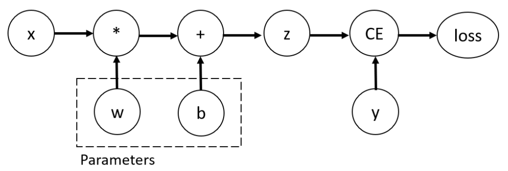

自动微分运算-TORCH.AUTOGRAD
译者：runzhi214
项目地址：https://pytorch.apachecn.org/2.0/tutorials/beginner/basics/autogradqs_tutorial
原始地址：https://pytorch.org/tutorials/beginner/basics/autogradqs_tutorial.html
在训练神经网络的时候，最常用的算法就是反向传播算法。在这个算法中，模型参数根据相对于每个给定参数的损失函数的梯度来调整。
为了计算这些梯度，PyTorch 有一个内置的微分运算引擎叫 torch.autograd。它支持对任何计算图自动计算梯度。
考虑一个最简单的单层神经网络，它有输入值 x、参数 w 和 b、和一些损失函数。它可以在 PyTorch 中这么定义：
import torch
x = torch.ones(5) # input tensor
y = torch.zeros(3) # expected output
w = torch.randn(5, 3, requires_grad=True)
b = torch.randn(3, requires_grad=True)
z = torch.matmul(x, w)+b
loss = torch.nn.functional.binary_cross_entropy_with_logits(z, y)
tensor、函数和计算图
这个代码会定义下面的计算图:

在这个网络中，w 和 b 都是我们需要优化的参数。因此，我们需要能够对这些变量分别计算损失函数的梯度。为了这么做，我们设置这些tensor的 requires_grad 属性。
注意: 你可以在创建tensor的时候就设置
requires_grad的值、或者在创建之后用x.requires_grad_(True)方法来设置。
我们对tensor应用来创建计算图的函数事实上是一个 Function 类的对象。这个对象知道如何前向地计算函数，以及如何在向后传播的步骤中计算导数。反向传播函数的一个引用保存在tensor的 grad_fn 的属性中。你可以在文档中找到更多关于 Function 的信息。
print(f"Gradient function for z = {z.grad_fn}")
print(f"Gradient function for loss = {loss.grad_fn}")
输出:
Gradient function for z = <AddBackward0 object at 0x7f9615a14580>
Gradient function for loss = <BinaryCrossEntropyWithLogitsBackward0 object at 0x7f9615a14bb0>
计算梯度
为了优化神经网络中的参数，我们需要对参数计算损失函数的导数，也就是，我们需要在给定 x 和 y 下的 \(\frac{\partial loss}{\partial w}\) 和 \(\frac{\partial loss}{\partial b}\) 。要计算这些导数，我们调用loss.backward()，然后从 w.grad 和 b.grad 中获取值。
输出:
tensor([[0.3313, 0.0626, 0.2530],
[0.3313, 0.0626, 0.2530],
[0.3313, 0.0626, 0.2530],
[0.3313, 0.0626, 0.2530],
[0.3313, 0.0626, 0.2530]])
tensor([0.3313, 0.0626, 0.2530])
注意:
- 我们只能从计算图中将
require_grad设置为True的叶子结点获取grad属性。对于计算图中的其他节点，梯度不可获取。- 在给定的计算图中，出于性能原因我们只能用
backward进行一次梯度计算。如果我们想要对同一张计算图做几次backward调用，我们需要在backward调用时传递retain_graph=True参数。
禁用梯度追踪
默认情况下，所有设置 requires_grad=True 的tensor会追踪它的计算历史并支持梯度计算。但是也有我们并不需要这么做的场景，比如，当我们已经训练了模型且只想对一些输入数据应用的时候，比如我们只想做沿着网络的前向计算。我们可以通过用 torch.no_grad 包裹我们的计算代码块来停止追踪计算。
z = torch.matmul(x, w)+b
print(z.requires_grad)
with torch.no_grad():
z = torch.matmul(x, w)+b
print(z.requires_grad)
输出:
另一种取得同样效果的方法是在tensor上使用 detach() 方法。
输出:
你想要禁用梯度追踪的原因可能是：
- 为了把你神经网络中的某些参数标记为冻结参数(frozen parameters)
- 为了在你只做前向传递的时候加快计算速度，因为在不追踪梯度的tensor上进行的运算会更加高效。
计算图的更多内容
从概念上来说，autograd 在一个由函数(Function)对象构成的有向无环图中保持一份数据(tensor)以及全部执行的操作(以及产生的新tensor)的记录。在这个有向无环图(DAG)中，叶子节点是输入tensor，根节点是输出tensor。通过从根节点到叶子节点地追踪这个图，你可以用链式法则自动计算梯度。
在前向传递中，autograd 同时做两件事：
- 运行指定的操作来计算、生成一个tensor
- 维持这次运算在有向无环图中的梯度函数
当对有向无环图的根节点调用 .backward() 方法时，反向传递就开始了。然后 autograd 会：
- 从每个
.grad_fn中计算梯度 - 在对应tensor的
.grad属性中累计它们 - 应用链式法则，一路传播到叶子tensor。
注意: PyTorch 中的有向无环图是动态的: 一个重要的观察是这个图是从零重建的；每次
.backward()调用之后，autograd 都会开始构建一张新图。这一点允许你在模型中使用流控制语句；如果需要的话，你可以在每次迭代中改变结构、大小和和运算。
选读: tensor梯度和 Jacobian (译为：雅各布)乘积
在许多场景中，我们有一个标量损失函数，且我们需要对某些参数计算梯度。然而，也有些场景下输出函数是一个任意的tensor。在这种场景下，PyTorch 允许你计算一个 Jacobian 乘积，而不是真实的梯度。
对于一个向量函数 \(\vec y = f(\vec x)\)， 给定 \(\vec x = < x_1,...,x_n >\) 且 \(\vec y = < y_1,...,y_n >\)， 一个 \(\vec y\) 对 \(\vec x\) 的梯度可以用 Jacobian 矩阵表示为:
J =
PyTorch 允许你对一个给定的输入向量 \(v = < v_1,...,v_m >\) 计算 Jacobian 乘积 \(v^T \cdot J\)。这可以通过把 \(v\) 作为调用 backward 时的参数来实现的。\(v\) 的大小应该和我们想要计算乘积的原始tensor一致：
inp = torch.eye(4, 5, requires_grad=True)
out = (inp+1).pow(2).t()
out.backward(torch.ones_like(out), retain_graph=True)
print(f"First call\n{inp.grad}")
out.backward(torch.ones_like(out), retain_graph=True)
print(f"\nSecond call\n{inp.grad}")
inp.grad.zero_()
out.backward(torch.ones_like(out), retain_graph=True)
print(f"\nCall after zeroing gradients\n{inp.grad}")
输出:
First call
tensor([[4., 2., 2., 2., 2.],
[2., 4., 2., 2., 2.],
[2., 2., 4., 2., 2.],
[2., 2., 2., 4., 2.]])
Second call
tensor([[8., 4., 4., 4., 4.],
[4., 8., 4., 4., 4.],
[4., 4., 8., 4., 4.],
[4., 4., 4., 8., 4.]])
Call after zeroing gradients
tensor([[4., 2., 2., 2., 2.],
[2., 4., 2., 2., 2.],
[2., 2., 4., 2., 2.],
[2., 2., 2., 4., 2.]])
请注意当我们用相同的参数第二次调用 backward 的时候，梯度值是不一样的。这是因为在执行 backward 传播的时候，PyTorch 累计了梯度,也就是说计算的梯度被加到计算图中所有叶子节点的 grad 属性中。如果你想计算正确的梯度，你需要显式清零 grad 属性。在实际的工作训练中，优化器可以帮我们做到这一点。
注意: 之前我们调用
backward()函数的时候没有加参数。这实际上相当于调用backward(torch.tensor(1.0))， 这是在标量值函数的情况下计算梯度的有效方法，比如神经网络训练中的损失。